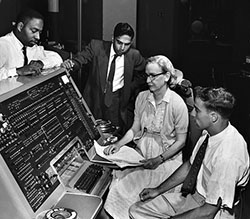

The Free Software movement began in the 80s, splintered into the Open Source Movement in the late 90s, and both still exist today. Here's a brief look at the movement's early history.
Examples Before the Free Software Movement
The first known free distributed software was the A-2 system. It was a primitive compiler developed by Grace Hopper for the UNIVAC. In 1973, the integrated circuit simulator software SPICE was widely distributed by UC Berkeley for no charge; public feedback prompted the much more popular SPICE2. And in 1982 Donald Knuth released the first public version of Tex.

Early Development of Unix
Unix was created as proprietary software by Thompson and Ritchie at AT&T. As a protest of proprietary software, Richard Stallman resigned from MIT’s AI Lab in order to start the GNU project. The University of California - Berkeley Unix research group released an open-source copy, BSD Unix, in 1992. In 1991, helped by a network of coders, Linus Torvald released Linux.
Birth of The Free Software Movement
The free software movement was comprised of a fluid set of individuals who either worked directly on free software or headed initiatives to promote the concept. Richard Stallman's GNU project in 1993 is the prime example of free software philosophy. GNU stands for GNU is not Unix, and its founding principles were laid out by Richard Stallman in the GNU Manifesto.